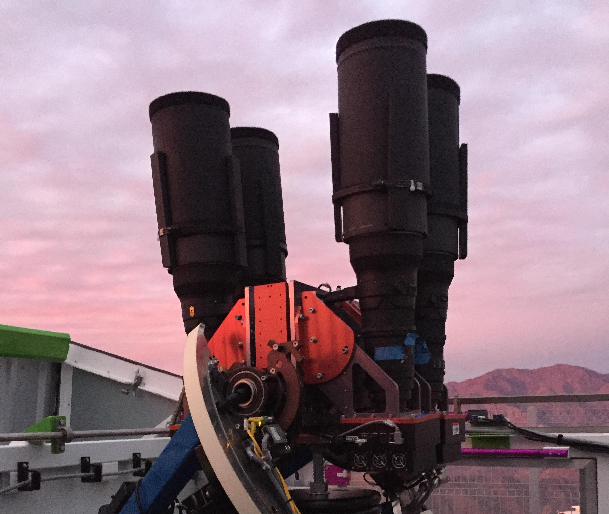

Additional Information
Contents
Additional Information#
Telescope Network#
The ASAS-SN telescope network consists of five stations; Haleakala Observatory (Hawaii) Mc-Donald Observatory (Texas), and the South African Astrophysical Observatory (SAAO, South Africa) each have one station, while Cerro Tololo International Obervatory (CITO, Chile) has two.
Each station has four units using FLI ProLine Cooled 2k CCD cameras with 14-cm aperture Nikon telephoto lenses. The units’ field-of-view is 4.5 degrees on the side (20 degrees 2) with a pixel size of 8.0 arcseconds. Ideally, each observation epoch consists of three dithered 90 second exposures, though our we are currently averaging 2.7 exposures per epoch due to scheduling and weather events. Furthermore, our observations are split between those taken with legacy V-band filters and g-band filters which we plan to use in perpetuity. With V-band filters the units are sensitive m ~ 17.5. Using g-band filters the units are sensitive to m ~ 18.5.The original CTIO and Hawaii stations used V-band filters for observations up until spring of 2019, where after they were switched to g-band. The latter three stations have been using g-band filters since their beginning of their operations.
Photometry#
To achieve full coverage of the sky the ASAS-SN observations are scheduled on a number of tessellated fields. Each field matches the 20 degree :superscript: 2 camera field-of-view and has at least a 0.5 degree overlap with adjacent fields. We have a total of 2,824 fields and each camera is scheduled to image a select subset of them.
The data were reduced using a fully-automated pipeline based on the ISIS image subtraction package. Each photometric epoch (usually) combines three dithered 90-second image exposures with a 4.47 x 4.47 degree field-of-view that is subtracted from a reference image. We then used the IRAF package with a 2-pixel, radius aperture to perform aperture photometry on each subtracted image, generating a differential light curve. The photometry was calibrated using the ATLAS Reference Catalog (REFCAT2).
To run photometry we have built reference images for all of our camera-fields. The reference images are calibrated using REFCAT2 and by fitting a 2d polynomial to find the zero point. After calibration we preform reference photometry on all targets from our input catalog that fall within each field and we crop out those within 0.2 degrees of the fields’ boundaries. Within an hour of observation our pipeline reduces and co-adds images together into observation epochs. We then perform photometry on each of these co-adds, using the reference photometry to determine magnitude differences. Finally the photometry for each target in a given co-add is appended to the corresponding light curves in our database.
ADQL#
While many other survey utilities such as the Gaia DR2 Archive and VizeR run interfaces compliant with the International Virtual Observatory Alliance’s (IVOA) Astronomical Data Query Language (ADQL) specification, we have chosen to use a custom grammar that both adds functionality and simplifies geometric queries
Syntax#
Our ADQL syntax is based off ANSI SQL and includes functions useful for astronomical queries.
adql_statement :
[with_clause] select_statement [union_select]
select_statement:
SELECT [ ALL | DISTINCT ]
select_expression [ alias ] [ , select_expression [ alias ] ] ...
FROM table_source [ join_clause ] ...
[ WINDOW window_name AS ( window_spec ) [ , window_name AS ( window_spec ) ] ... ]
[ WHERE condition ]
[ GROUP BY column_name ]
[ HAVING condition ]
[ ORDER BY { column_name | position } [ ASC | DESC ], ... ]
[ LIMIT row_count ]
with_clause:
WITH alias AS ( select_statement ) [ , alias AS ( select_statement ) ] ...
union_select:
UNION [ ALL | DISTINCT ] select_statement
[ UNION [ ALL | DISTINCT ] select_statement ] ...
select_expression: {
*
| column_name
| expression
| function_call [ OVER ( [ window_name| window_spec ] )
| ( select_statement )
}
table_source: {
table_name [ alias ]
| ( select_statement ) [ alias ]
}
join_clause {
table_source INNER JOIN table_source [ join_spec ]
| table_source { LEFT | RIGHT } [OUTER] JOIN table_source [ join_spec ]
| table_source NATURAL [ INNER | { LEFT | RIGHT } [ OUTER ] ] JOIN table_source
}
join_spec: {
USING (column_name)
| ON condition
}
window_spec:
[ window_name ]
[ PARTITION BY expression ]
[ ORDER BY column_name { ASC | DESC } ]
[ {
CURRENT_ROW
| { UNBOUNDED | expression } { PRECEDING | FOLLOWING }
| BETWEEN frame_start AND frame_end
} ]
alias:
[ AS ] identifier
Functions#
DISTANCE (ra 0, dec 0, ra 1, dec 2)
ARCMIN (units)
ARCSEC (units)
HMS (coordinates)
DMS (coordinates)
Note
As our catalog search engine is built on Apache Spark, users can employ all of Spark’s SQL functions.
Example Queries#
The following examples illustrate different types of queries possible through our ADQL interface.
Cone Search#
SELECT
asas_sn_id,
ra_deg,
dec_deg
FROM stellar_main
WHERE DISTANCE(ra_deg, dec_deg, 255.0, 82.1) <= 5.0
Returns all targets in the stellar_main catalog within 5.0 degrees or RA ~ 255.0 DEC ~ 82.1
Nearest Neighbor Search#
WITH sources AS
(
SELECT
asas_sn_id,
ra_deg,
dec_deg,
DISTANCE(ra_deg, dec_deg, 255.0, 82.1) AS angular_dist
FROM stellar_main
)
SELECT *
FROM sources
WHERE angular_dist <= ARCMIN(15)
ORDER BY angular_dist ASC
Returns all targets within 15 arcminutes of coorddinates, ordered by distance from center.
Cross Catalog Search#
SELECT
asas_sn_id,
s.name AS swift_id,
v.name AS vso_id
FROM swift s
JOIN aavsovsx v USING(asas_sn_id)
Returns all targets found in both the Swift and AAVSOVSX catalogs.
Filter by Radial Pollution and Mean Mag#
SELECT
asas_sn_id,
gaia_mag,
rp_01
FROM stellar_main
WHERE 1=1
AND gaia_mag BETWEEN 17.0 AND 18.0
AND rp_00_1 > 20
Returns targets with Gaia G mag between 17.0 and 18.0 whose cumulative flux x0.1 is exceeded in a radius over 20 arcseconds (stellar_main columns are derived from REFCAT2).
Finding White Dwarfs#
SELECT
asas_sn_id,
gaia_id,
pstarrs_g_mag,
(gaia_mag - (5 * LOG10(plx) - 10)) AS g_mag_abs,
name
FROM stellar_main
JOIN morx USING(asas_sn_id)
WHERE 1=1
AND (gaia_mag - (5 * LOG10(plx) - 10)) > 10
AND (gaia_b_mag - gaia_r_mag) < 1.5
Returns all white dwarfs found in the stellar_main and MORX catalogs by determining absolute gaia magnitudes.
Name Lookups#
SELECT
asas_sn_id,
name
FROM aavsovsx
WHERE name LIKE 'ASASSN%'
Returns all variable objects in the AAVSOVSX catalog discovered by the ASAS-SN survey!
Catalog Requests#
Aside from the main stellar catalog we have derived from REFCAT2, we also run photometry on sources from a number of other external catalogs. These external catalogs are from NASA’s High Energy Astrophysics Science Archive Reseach Center (HEASARC).
If you or your research group is interested in getting ASAS-SN photometry from an additional HEASARC catalog, or any other catalog sources, please contact us.
Citation#
Paper in progress.